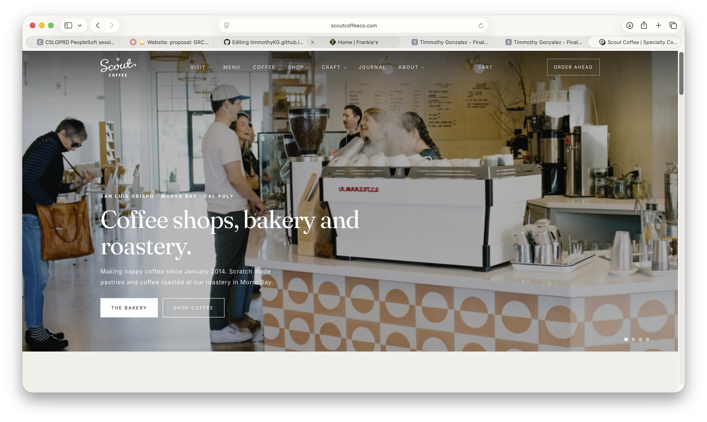
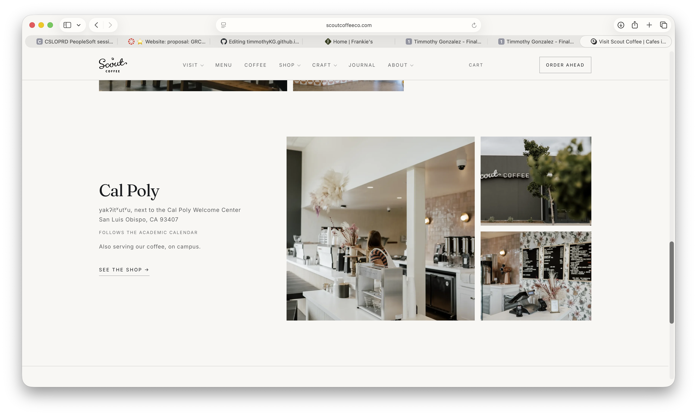
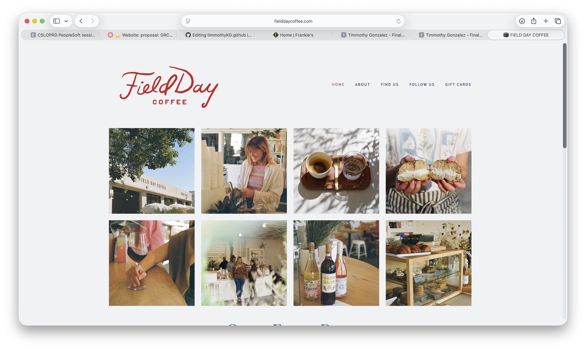
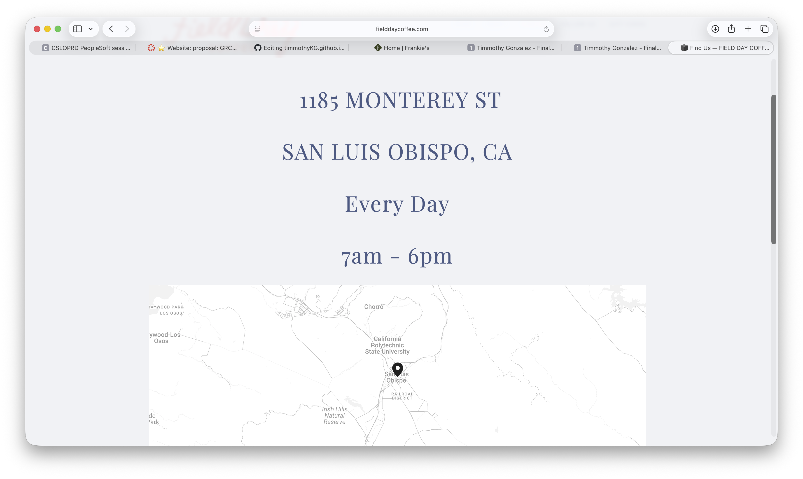
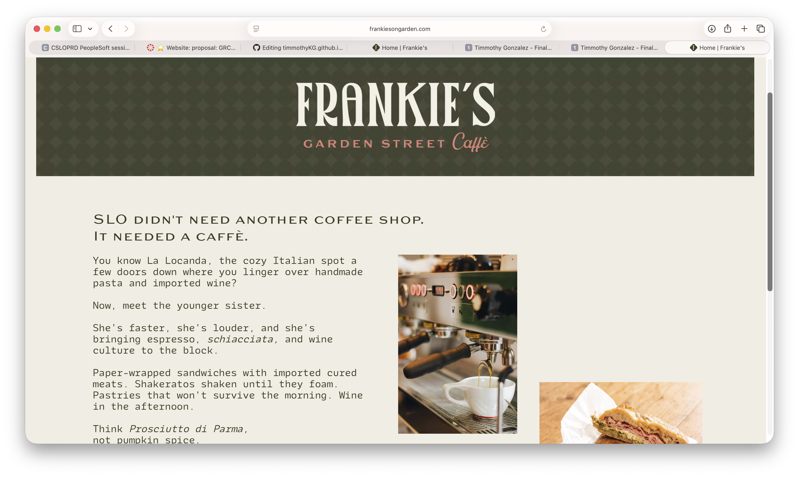
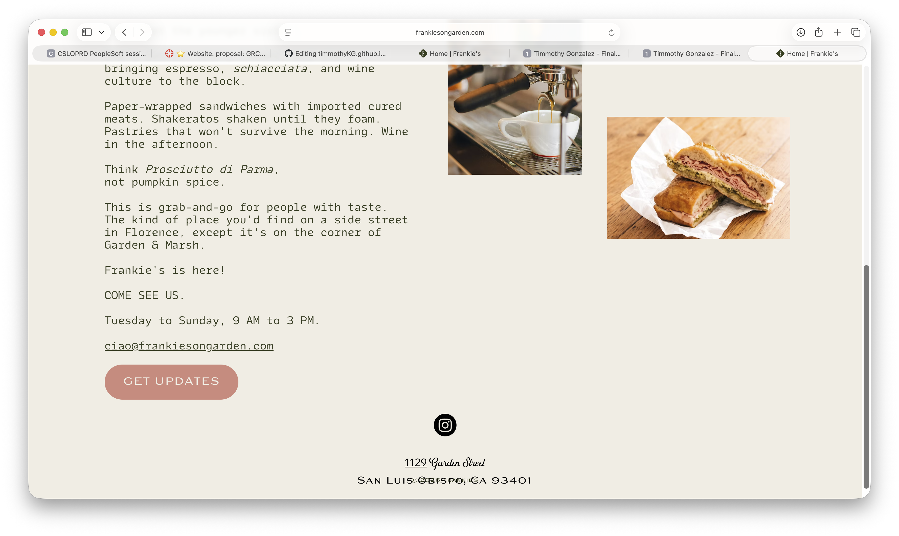

Certified Coffee
Certified Coffee is a small coffee shop in San Luis Obispo, California. It sells coffee, espresso drinks, tea, pastries, and a few breakfast items. The idea behind the shop is to have a simple and comfortable place where people can get a drink, hang out, or grab something before going about their day. Certified Coffee only has one location.
The people using this website are customers who want to know more about the coffee shop before they visit. They might be looking for a drink, something to eat, or a place to sit and spend some time. They need the website to give them the basic information without making it difficult to find.
The main things visitors will want to do are look at the menu, see the prices, find the location, and check the hours. The website should make these things easy to find.






Welcome to Certified Coffee. We are a small coffee shop in San Luis Obispo serving coffee, espresso drinks, tea, pastries, and breakfast items.
Stop by to grab a coffee before starting your day, meet up with someone, or just take a break. We want Certified Coffee to be a place where people can relax and enjoy their drink.
[coffee cup next to a pastry on a small table]
[inside of a coffee shop with tables and chairs]
Certified Coffee started with the idea of making a coffee shop that feels simple and comfortable. We wanted a place where people could stop in for a quick coffee or stay for a little while.
Our menu has different types of coffee, espresso drinks, tea, pastries, and breakfast food. We keep the menu pretty simple so customers can find something they like without having too many choices.
The coffee shop has a relaxed atmosphere and is meant to be a place where customers can hang out, meet with friends, or get some work done.
[barista making a latte]
[pastries sitting in a display case]
House Coffee — $3.50 — Fresh brewed coffee that is smooth.
Cold Brew — $4.50 — Cold brewed coffee served over ice.
Vanilla Latte — $5.25 — Espresso with steamed milk and vanilla.
Mocha — $5.50 — Espresso, steamed milk, and chocolate.
Cappuccino — $4.75 — Espresso with steamed milk and foam.
Chai Latte — $5.25 — Chai mixed with steamed milk and warm spices.
Iced Matcha — $5.25 — Matcha mixed with milk and served over ice.
Fresh Lemonade — $4.00 — Lemonade made with fresh lemon juice.
Butter Croissant — $4.25 — A flaky croissant that is baked until golden.
Breakfast Sandwich — $7.50 — Egg and cheddar cheese with bacon or avocado on a toasted English muffin.
[latte and pastry on a coffee shop table]
[iced coffee in a clear glass]
[different pastries in a display case]
[multiple breakfast sandwiches being cooked]
Certified Coffee
123 San Luis Obispo Street
San Luis Obispo, CA 93401
Monday–Friday: 7:00 AM–6:00 PM
Saturday–Sunday: 8:00 AM–5:00 PM
Come by for coffee, food, or just to hang out.
Certified Coffee is near downtown San Luis Obispo.
Phone: (805) 805-805
Email: hello@certifiedcoffee.com
[outside of a small coffee shop on a street iwth sunset in backround]
[entrance to Certified Coffee with the business sign]
[Inside picture of cozy fireplace and customers resting]]
[map showing the location of Certified Coffee]